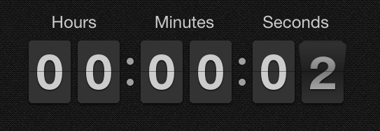

I want to embed a clock positioned in the middle.
We can get more into that later

Here's what I'm trying to do:
- Set a background image that is responsive. You can find the image inside the "img" folder.
- Setup my divs in a way that will keep the information as close to the center of the page as possible - that's also centered from the top, like everything is on this page.